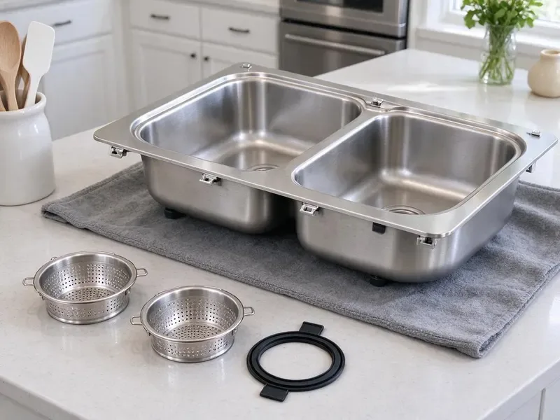

Grease Trap Installation in Johns Creek, GA
From under-sink hydromechanical units to in-ground gravity interceptors, our Johns Creek, GA crews handle the complete grease trap install.
- Fast, Dependable Service
- Licensed & Insured
- Licensed Commercial Plumbers
- Experienced Local Plumbers
Get a grease interceptor that passes inspection in Johns Creek, GA.
Make sure your commercial kitchen or restaurant meets local regulations with our professional service.
Commercial Grease Trap Installation for Kitchens in Johns Creek, GA
When it comes to grease trap installation, HGR Plumbing provides complete services throughout Johns Creek, GA. Our certified plumbers ensure that your new system is sized correctly, installed to meet all local regulations, and functions efficiently from day one.
Our expertise includes:
- All grease trap sizes and types
- Residential grease interceptor setup for high-volume use.
- Compliance with Georgia plumbing and environmental codes.

Additional Kitchen Plumbing Services in Johns Creek, GA
Our kitchen plumbing services in Johns Creek, GA cover sinks, disposals, dishwashers, and grease traps so your kitchen keeps running without backups or leaks.


Customers
Why Choose HGR Plumbing for Grease Trap Installation in Johns Creek, GA?
Grease traps are essential for any food service establishment, keeping fats, oils, and greases out of the city's sewer system. Proper installation prevents costly plumbing issues and ensures smooth operation of your Johns Creek business.
- Odor Control, Properly sealed and maintained grease traps greatly reduce unpleasant odors common in commercial kitchens.
- System Efficiency, Proper sizing and installation mean your grease trap will effectively filter waste, extending the life of your plumbing system.
- Experienced Plumbers, Our technicians are highly trained in the specific methods and requirements for installing various types and sizes of grease traps.
Citywide Coverage
HGR Plumbing serves every neighborhood and commercial district within Johns Creek, ensuring that businesses across the area have access to top-tier grease trap installation. No matter where your restaurant or food service establishment is located, our team is ready to help.
Experienced Team
The HGR Plumbing team consists of licensed and insured plumbers who regularly undergo training on the latest grease trap technologies and installation techniques. You can trust our experience for a reliable and code-compliant installation every time.
Safety-First Approach
Outdoor interceptors are installed with traffic-rated lids where needed and backfilled to prevent settling. We locate buried utilities before any excavation and keep the site safe for staff and guests.
Trusted Certified Johns Creek Plumbing Services Professionals
At HGR Plumbing, we take pride in providing licensed, certified plumbing services throughout Johns Creek, GA. Backed by leading industry credentials, our experienced plumbers combine technical skill with genuine customer care. Whether it is repair, installation, or maintenance, we follow strict safety and quality standards to deliver long-lasting results you can trust.
Call Us Now PHCC Plumbing Contractor Recognition
PHCC Plumbing Contractor Recognition Better Business Bureau (BBB) Accreditation
Better Business Bureau (BBB) Accreditation Angi Certified Pro
Angi Certified Pro ISO 9001 Quality Management Certification
ISO 9001 Quality Management CertificationCode-Ready Grease Trap Installation Services in Johns Creek, GA
In-Ground Gravity Interceptor Installation in Johns Creek, GA
Larger restaurants and high-volume kitchens often need an outdoor gravity interceptor. These concrete or polyethylene tanks typically range from several hundred to over 1,500 gallons. We excavate, set the tank on a stable base, connect inlet and outlet piping and install manhole risers. Homes are a mix of slab, crawlspace, and basement foundations, and crawlspace homes make most supply and drain repairs easier to reach. We plan excavation equipment around the ground conditions we find on site. A properly installed interceptor can go much longer between pump-outs than an indoor trap.

Grease Trap Brands We Install in Johns Creek
HGR Plumbing installs a wide range of reputable grease trap brands known for their durability and effectiveness. We work with leading manufacturers like Zurn, Big Dipper, Schier, and Rockford Separators, among others. Our team in Johns Creek can help you select the best brand and model that fits your specific needs, budget, and local code requirements for your commercial kitchen.
Gravity Grease Interceptor Installation in Johns Creek, GA
Gravity grease interceptors, or GGI units, are larger, typically located outdoors, and rely on the natural difference in specific gravity between FOG and water. These are common for high-volume commercial kitchens. Our team handles the involved excavation, concrete work, and plumbing connections required for proper GGI installation, ensuring compliance with all local Georgia ordinances for waste management.
Hydromechanical Grease Trap Installation in Johns Creek
Hydromechanical grease traps sit under or near sinks and use baffles and flow control to separate grease from water. They are common in small cafes, coffee shops and quick-service restaurants with limited space. We install units from Zurn, Watts, Schier and Endura sized by gallons per minute. Each install includes a flow control fitting and proper venting to keep the trap working as designed. These units need frequent cleaning, so we place them where staff can reach the lid easily.
Automatic Grease Removal Units in Johns Creek
Automatic grease removal devices skim grease from the water and collect it in a container your staff empties. Brands like Thermaco Big Dipper are popular in kitchens with limited space and frequent cleaning needs. We install these units with the correct power supply and drain connections. They can reduce the need for frequent pump-outs in smaller kitchens. We explain daily maintenance so your staff keeps the unit running smoothly.
Grease Trap Installation for Schools and Institutions in Johns Creek
School cafeterias, hospitals, senior living facilities and churches with kitchens often need commercial interceptors. These sites usually have large dish machines and steam kettles that push high flow. We size interceptors to handle peak lunch or dinner loads without bypassing grease. Our crews schedule work around school breaks or off hours. We also provide documentation for facility managers and code officials.
Under-Sink Grease Trap Setup in Johns Creek, GA
Smaller establishments or specific kitchen stations in Johns Creek, GA may benefit from compact under-sink grease traps. These units are ideal for capturing FOG at the source, preventing it from entering the main plumbing lines. Our team expertly installs these smaller units, ensuring proper sizing, sealing, and connection to your existing plumbing system for effective waste management and odor control.

Gravity Grease Trap Installation in Johns Creek
Gravity grease traps are a common and effective solution for many commercial kitchens in Johns Creek. These passive systems use the natural separation of FOG from water due to density differences. Our plumbers are experts in installing gravity grease traps, ensuring proper sizing, correct inlet and outlet piping, and easy access for future cleaning and maintenance to maximize their efficiency.
Grease Trap Installation Near Me in Johns Creek, GA
Our crews are based nearby and can visit your site quickly for a sizing review. We bring the equipment needed for indoor or outdoor installs. You get one point of contact from planning to final inspection.
When your business requires professional grease trap installation, you need a trusted local partner. HGR Plumbing is committed to serving the Johns Creek community with reliable, code-compliant plumbing solutions. Reach out for a hassle-free installation experience.
HGR Plumbing at a Glance
- Licensed and insured plumbers serving Johns Creek, GA
- Same-day appointments and 24/7 emergency response
- Clear written estimates, no hidden fees
- 4.9-star rated by 357+ Georgia customers
Johns Creek Map
Johns Creek Information
- Population
- 81,108
- Area codes
- 470/770/678
- Service area
- Johns Creek and communities within 40 miles
- Nearby
- Alpharetta, Roswell, Dunwoody, Sandy Springs
For commercial kitchens in Johns Creek, GA, proper grease trap installation is essential for keeping FOG breakdown and odor issues under control. Long, hot summers and heavy humidity are the main stress on plumbing in Georgia, driving condensation, mold in crawlspaces, and hard-working water heaters.
Expert Services
Trust our professionals for reliable HGR Plumbing solutions in Johns Creek, GA.
Our Specialized Plumbing Services in Johns Creek, GA
At HGR Plumbing, we provide a complete range of plumbing services across Johns Creek, GA. From leak detection to full system installations, our team ensures fast, precise, and affordable service for both residential and commercial properties. Explore our core services below:


How Our Grease Trap Installation Process Works in Johns Creek, GA
We follow a proven method for every grease trap installation in Johns Creek, guaranteeing a high-quality and compliant outcome.
Request a Quote
Call HGR Plumbing at (770) 470-3778 to discuss your grease trap installation needs. We will gather information about your commercial kitchen and provide a clear, no-obligation estimate.
On-Site Assessment
Our expert plumbers will visit your Johns Creek location to assess your specific requirements, including kitchen layout, wastewater volume, and local code mandates. This ensures proper sizing and placement of the new grease trap.
Professional Installation
We proceed with the installation, carefully connecting the grease trap to your plumbing system and ensuring all seals and connections are secure. Our team conducts thorough testing to confirm proper functionality before completion.
Frequently Asked Questions About Grease Trap Installation in Johns Creek
The cost of grease trap installation in Johns Creek, GA varies widely based on the type and size of the trap, whether it's an indoor or outdoor unit, and the complexity of the installation. For a small under-sink hydro-mechanical unit, plan on between $1,500 and $4,000. Larger outdoor gravity interceptors can range from $7,000 to $20,000 or more, including excavation and concrete work.
The timeline for grease trap installation depends on the project's scope. A simple under-sink unit might take a few hours. Larger outdoor gravity interceptors, which involve excavation and more extensive plumbing, can take anywhere from one to several days. We always aim to minimize disruption to your business operations.
That depends on local rules and the trap type. Some programs require dish machines to discharge through the interceptor, while others restrict high-temperature discharge into certain units, so we confirm the requirement before we install.
HGR Plumbing provides a warranty on our workmanship for all grease trap installations. Additionally, the grease trap unit itself will usually come with a manufacturer's warranty. We will provide you with all warranty details at the time of installation, giving you peace of mind.
Manufacturer warranties vary, with many polyethylene units carrying long structural warranties. We also warranty our installation workmanship and connections.
Indoor traps should be close to the fixtures they serve and easy to open for cleaning. Outdoor interceptors are usually placed where a pump truck can reach them without blocking customer traffic.
Determining the correct grease trap size involves calculating your kitchen's wastewater flow rate, fixture count, and peak operating hours. Our experienced plumbers will conduct a thorough assessment of your Johns Creek business to recommend the appropriate size and type of grease trap that meets local codes and your operational needs.
Installation time depends on the size and complexity of the grease trap. A small under-sink unit might take a few hours, while a large outdoor interceptor could require several days due to excavation and concrete work. We aim to complete installations efficiently to minimize disruption to your business operations.
What People Are Saying About Our Plumbing Experts?

Robert G.
The trenchless sewer replacement saved our front yard. They walked us through the camera inspection footage first so we knew exactly what we were paying for.
Sewer Line Replacement · Johns Creek, GA
Sofia M.
Two new toilets installed in one visit, no mess left behind, and the tech even adjusted a faucet he noticed was dripping. Fair pricing and really friendly.
Toilet Installation · Sandy Springs, GA
Patricia H.
We had a slab leak that two other companies could not find. HGR Plumbing located it in under an hour, explained our options, and the price matched the quote to the dollar.
Slab Leak Repair · Johns Creek, GAJames P.
Our commercial plumbing system had a leak under the sink, and HGR Plumbing handled it professionally. The plumbers arrived quickly and restored everything without disruption to our customers.
Commercial Plumbing · Johns Creek, GA
Mark T.
When our office needed drain cleaning, HGR Plumbing provided quick, reliable service. The plumber arrived on time and made sure every drain flowed perfectly before leaving. Very satisfied.
Drain Cleaning · Brookhaven, GA
Emily R.
I called HGR Plumbing for plumbing repair, and the technician was fast, polite, and thorough. They explained the problem clearly and fixed it the same day. I will definitely hire them again. Highly recommended!
Plumbing Repair · Dunwoody, GA